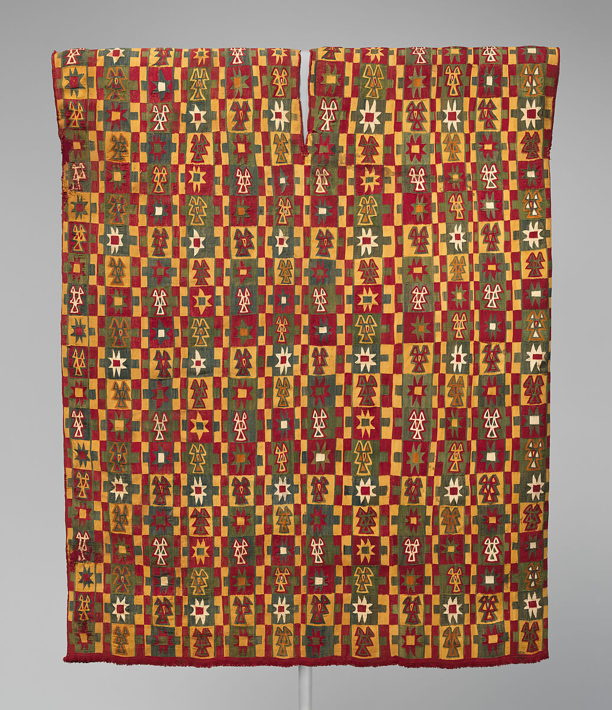

Contisuyu
The Inkan West Coast
The Inkan West Coast
Surplus of materials were kept in colcas and used to collect taxes in the form of food, clothing and other materials from the suyus before being distributed across the entire empire. Made out of stone with grass roofs, systems like this worked as a security measure in years where harvests were poor and also as a solution to the fact that Inkans did not have any way to easily transport large amounts of goods to a more central location.
Items stored depended on the regions though foods included:
Illustration of a Colca
As with most cultures, the ability to produce clothing was extremely important and textile making played an important role in Inkan civilization being used to make tunics that showed a person's status.
Adding to this, a highly coveted wild cotton grew in the coastal valleys of Contisuyu. It was strong, thick and resilient, being used to make sturdy textiles, blankets, fishing nets, and ropes.
What were some of the important motifs used in Andean clothing?
The eight-pointed star was a symbol of rank all throughout Tawantinsuyu but it was especially prevalent in Contisuyu
This could be due to the presence of the Chuquibamba people who lived on the coast and precended the Inkan empire.
A Tunic Made By a Chuquibamba Artist.
Congrats on learning about this region! Keep learning about the others!
Chinchaysuyu
Qullasuyu
Antasuyu